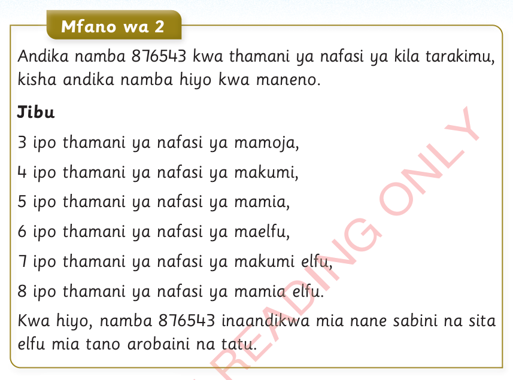
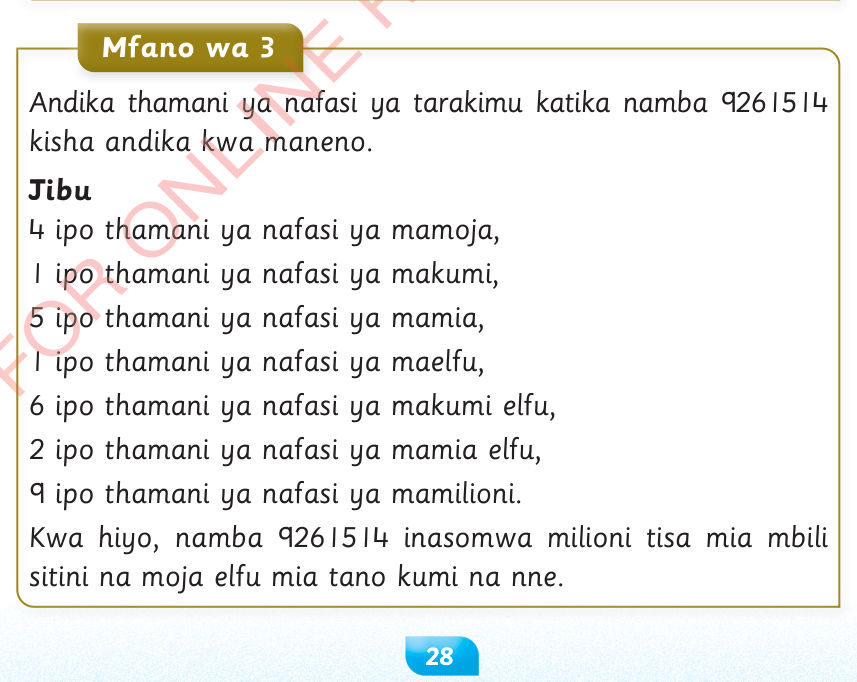

Andika namba 876543 kwa thamani ya nafasi ya kila tarakimu, kisha andika namba hiyo kwa maneno.
3 ipo thamani ya nafasi ya mamoja,4 ipo thamani ya nafasi ya makumi,5 ipo thamani ya nafasi ya mamia,6 ipo thamani ya nafasi ya maelfu,7 ipo thamani ya nafasi ya makumi elfu,8 ipo thamani ya nafasi ya mamia elfu.Kwa hiyo, namba 876543 inaandikwa mia nane sabini na sita elfu mia tano arobaini na tatu.

Andika thamani ya nafasi ya tarakimu katika namba 9261514 kisha andika kwa maneno.
4 ipo thamani ya nafasi ya mamoja,1 ipo thamani ya nafasi ya makumi,5 ipo thamani ya nafasi ya mamia,1 ipo thamani ya nafasi ya maelfu,6 ipo thamani ya nafasi ya makumi elfu,2 ipo thamani ya nafasi ya mamia elfu,9 ipo thamani ya nafasi ya mamilioni.Kwa hiyo, namba 9261514 inasomwa milioni tisa mia mbili sitini na moja elfu mia tano kumi na nne.